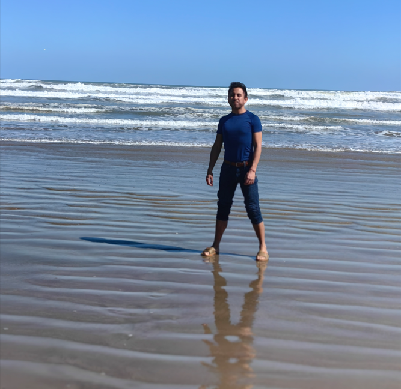

Economist/banker specialized in money laundering prevention at Financial Institutions. I am interested in several topics such as technology, history, literature and epistemology.
Experience
Bilingual KYC Officer at Citi Mexico (Citigroup)
Full-time
September 2017 - Present
Mexico City-Hybrid Scheme
Investment Bank/Institutional Clients Group
KYC Program Implementation at Institutional Clients Group (Top Corporations, Financial Institutions and Governments). This implementation consist of:
- Transaction analysis
- Investigation within the financial crimes
- Investigation within AML, risk
- Investigation within Threat analysis
- Investigation within fraud fields
Education
Universida Panamericana
Specialist in Engineering and Project Management
2016-2017
Capable of carrying out technical and human resource planning and of assuring the viability of projects by implementing efficient business
Hobbies and Interests
- Swimming
- Literature
- Metaphysics topics
- Spiritual development
- Technology topics